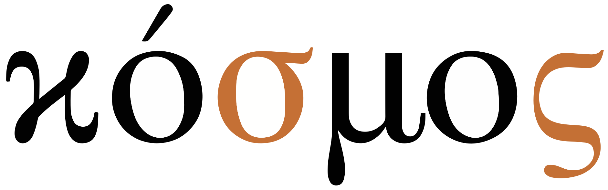
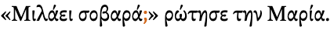
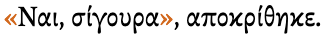
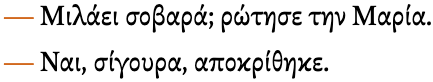
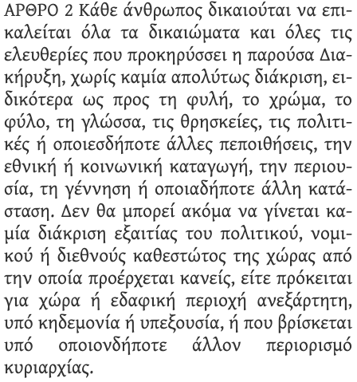

This page brings together basic information about the Greek script and its use for the modern Greek language. It aims to provide a brief, descriptive summary of the modern, printed orthography and typographic features, and to advise how to write Greek using Unicode.
Select part of this sample text to show a list of characters, with links to more details.
Change size: 28px
ΑΡΘΡΟ 1 Όλοι οι άνθρωποι γεννιούνται ελεύθεροι και ίσοι στην αξιοπρέπεια και τα δικαιώματα. Είναι προικισμένοι με λογική και συνείδηση, και οφείλουν να συμπεριφέρονται μεταξύ τους με πνεύμα αδελφοσύνης.
ΑΡΘΡΟ 2 Κάθε άνθρωπος δικαιούται να επικαλείται όλα τα δικαιώματα και όλες τις ελευθερίες που προκηρύσσει η παρούσα Διακήρυξη, χωρίς καμία απολύτως διάκριση, ειδικότερα ως προς τη φυλή, το χρώμα, το φύλο, τη γλώσσα, τις θρησκείες, τις πολιτικές ή οποιεσδήποτε άλλες πεποιθήσεις, την εθνική ή κοινωνική καταγωγή, την περιουσία, τη γέννηση ή οποιαδήποτε άλλη κατάσταση. Δεν θα μπορεί ακόμα να γίνεται καμία διάκριση εξαιτίας του πολιτικού, νομικού ή διεθνούς καθεστώτος της χώρας από την οποία προέρχεται κανείς, είτε πρόκειται για χώρα ή εδαφική περιοχή ανεξάρτητη, υπό κηδεμονία ή υπεξουσία, ή που βρίσκεται υπό οποιονδήποτε άλλον περιορισμό κυριαρχίας.
The Greek alphabet is used to write the Greek language, which is spoken by around 13 million people worldwide. About 11 million are in Greece, and a further million in Cyprus, but other Greek-speaking communities are spread around the world in places such as Australia, Albania, Italy, etc.
Greek letters are also widely used for technical symbols in mathematics and science, as well as the international phonetic alphabet (IPA).
Ελληνικό αλφάβιτοEllinıkó alfávıtoGreek alphabet
The Greek alphabet was derived from the Phoenician around the 8th-9th century BCE. The Greeks added letters for vowels to their script, creating the first alphabet, and the ancestor of the Latin, Cyrillic and Coptic scripts.
There were initially a number of variants of the alphabet, including principally Chaldician, from which Old Italic and Latin alphabets descended, and Ionic, which led to the Greek in use today and Cyrillic.
Greek is an alphabet. Letters typically represent a consonant or vowel sound. See the table to the right for a brief overview of features for the modern Greek orthography.
Modern Greek comes in 2 flavours: monotonic and polytonic. Monotonic Greek generally uses only the tonos diacritic to show the location of emphasis in a word, although it may also use the dialytika occasionally to separate vowel sounds. Polytonic Greek attaches multiple diacritics more often. For this description, we will focus on modern Greek, but will include a short overview of polytonic Greek differences.
Greek letters are in a sense encoded twice, since there is a sizeable set of atomic characters, but it is also always possible to write equivalent decomposed sequences. The visual forms of letters don't usually interact.
Greek text runs left-to-right in horizontal lines. Words are separated by spaces. The script is bicameral. The shapes of the upper and lowercase forms are typically the same.
The Modern Greek alphabet has 7 basic vowel letters, but they are combined to produce 8 digraphs representing additional sounds. They can also take tonos and/or dialytika diacritics, for which there are separate code points.
Plain vowels
The basic set of vowels used in modern Greek includes the following.
In addition, a number of atomic characters combine these letters with accents. See combiningV.
Digraphs
In Greek, pairs of vowel letters may represent a single sound, or something other than two consecutive basic vowel sounds. These spellings hark back to Classical Greek.
These are vowels written as digraphs in modern Greek.
ει␣οι␣υι␣ου␣αι
Three more digraphs are pronounced with v before a vowel or voiced consonant, and f elsewhere.
ηυ␣ευ␣αυ
Polytonic Greek has additional digraphs involving iota.
Monotonic vowel diacritics
́␣̈
The 2 diacritics above appear only in decomposed text. Usually, an atomic character is used to represent both base letter and accent.
Tonos
Stressed syllables carry a tonos diacritic. This can be written by following the above vowel characters with 0301, but Unicode also has a set of atomic characters.
ή␣ύ␣ί␣ό␣ώ␣έ␣άΉ␣Ύ␣Ί␣Ό␣Ώ␣Έ␣Ά
The diacritic appears to the left of the uppercase letters. (The uppercase letters shown here are only used if the first letter of a word is capitalised and that letter happens to be a vowel with a tonos. If the whole word is uppercased, the tonos is dropped. See transforms.)
If the stress falls on a digraph, the second letter carries the tonos, eg.
αίμα
Dialytika
Monotonic Greek on occasion uses a dialytika diacritic to indicate that two adjacent vowel letters don't form a digraph, eg. the first 2 vowels in this example are pronounced ai, rather than eκαϊμάν
Again, it is possible to use 0308 with the basic vowel or vowel+tonos, or to use one of the following atomic characters.
ϊ␣ϋ␣ΰ␣ΐΪ␣Ϋ
If the first vowel in what looks like a digraph has a tonos diacritic, this signals that it is not a digraph, and there is no need to use a dialytika, eg.
τρία
Tonos and dialytika may appear together above a vowel that is stressed, in which case the tonos appears either between or above the dialytika, eg.
ευφυΐα
Unlike tonos, dialytika is not dropped for capital letters, but may be produced from a tonos in some circumstances (see transforms).
̈́
The code point 0344 exists, but its use is discouraged by the Unicode Standard in favour of 0308 0301.u,#Greek
Standalone vowels
Standalone vowels are written using ordinary vowel letters and no special arrangements.
εάν
Polytonic vowel diacritics
́␣̀␣͂␣̔␣̓␣̓␣ͅ␣̈␣̄␣̆
In polytonic Greek, stressed syllables are identified using one of 3 diacritics: oxia (called tonos in monotonic Greek), varia, or perispomeni. The original distinctions represented by these 3 marks are no longer relevant to modern Greek, and they simply reflect much older spellings. There are atomic characters for most combinations, but decomposed sequences use 0301 for oxia and 0300 for varia. Perispomeni can be rendered as a circumflex, a tilde, or occasionally a macron, so a special code point is available for it: 0342.
A vowel that begins a word carries one of two breathing marks, where the rough breathing mark (dasia) indicates the presence of h, and the smooth (psili) its absence. (h is no longer used in modern Greek.) 0314 represents the rough breathing mark, and 0313 the smooth breathing mark. The code point 0343 also represents the smooth breathing mark, but exists for compatibility with other encodings and should not be used.u,#Greek
The ypogegrammeni (or iota subscript) represents the former offglide for what were long diphthongs in ancient Greek, and in decomposed text can be written using 0345. It is used with 3 vowel letters, α, η, and ω, ie. ᾳῃῳ
Polytonic Greek also uses 0308 to indicate that two adjacent vowels receive equal weight.
The Greek Extended Unicode block provides atomic characters for most of the combinations of Greek letters and diacritics. The atomic code points are produced by normalisation.
When decomposed, these characters produce 2 additional combining marks: 0304 and 0306.
In addition to the characters just listed, there are a set that replicate characters in monotonic Greek, but change tonos in the character name to oxia. These shouldn't be used, since they normalise to characters in the main Greek block (which don't get converted back to these characters).
Άά␣Έέ␣Ήή␣Ίί␣ΐ␣Όό␣Ύύ␣ΰ␣Ώώ
Vowel sounds to characters
This section maps Modern Greek vowel sounds to common graphemes in the Greek orthography The code points for vowels with tonos and/or dialytika accents are not shown, but they have the same sound.
Lowercase graphemes are shown to the left, and uppercase on the right.
Click on a grapheme to find other mentions on this page (links appear at the bottom of the page). Click on the character name to see examples and for detailed descriptions of the character(s) shown.
Plain vowels
i
ι φίδι
υ μυρίζω
η Σελήνη
ει ψείρα
υι
οι άλλοι
Ι
Υ
Η
ΕΙ
ΥΙ
ΟΙ
u
ου πούπουλο
ΟΥ
e
ε τέσσερα
αι λαιμός
Ε
ΑΙ
o
ο όνομα
ω σκοτώνω
Ο
Ω
a
α καλός
Α
Other combinations
if
ηυ followed by a voiceless consonant.
ΗΥ
iv
ηυ followed by a voiced consonant.
ΗΥ
ef
ευ followed by a voiceless consonant.
ΕΥ
ev
ευ followed by a voiced consonant.
ΕΥ
af
αυ followed by a voiceless consonant.
ΑΥ
av
αυ followed by a voiced consonant.
ΑΥ
Consonants
Consonant summary table
The following table summarises the main consonant to character assigments.
The left column is lowercase, and the right uppercase.
Whereas the table just above takes you from sounds to letters, the following simply lists the basic consonant letters (however, since the orthography is highly phonetic there is little difference in ordering).
ς is a word-final form of σ. Due to legacy implementations, Unicode has a separate code point for this glyph (see shaping).
Consonants are sometimes doubled, but the sound is not lengthened as a consquence.
Digraphs
When they appear together the following digraphs produce voiced sounds. At the beginning of a word only the plosive is pronounced.
μπ ␣ντ ␣νκ
The 2 digraphs just below are generally pronounced either ɡ, or ʝ before front vowels e and i. When they follow a vowel the nasal is pronounced, giving ŋɡ and ɲɟ.
γγ␣γκ
Polytonic accented rho
Although not a vowel, an initial letter ρ can also carry a rough breathing mark. When geminated, the first always has a smooth breathing mark, and the second rough,ws ie. ῤῥ
atomic characters are available in the Extended Greek block.
ῤ␣Ῥῥ
Archaic letters
The following letters are no longer used in modern Greek text, except that a few are used for the additive counter styles (see cs_additive).
Ͱ␣ͱ␣Ͳ␣ͳ␣Ͷ␣ͷ␣Ϙ␣ϙ␣Ϛ␣ϛ␣Ϝ␣ϝ␣Ϟ␣ϟ␣Ϡ␣ϡ␣Ϸ␣ϸ␣Ϻ␣ϻ
Consonant sounds to characters
This section maps Modern Greek consonant sounds to common graphemes in the Greek orthography.
Click on a grapheme to find other mentions on this page (links appear at the bottom of the page). Click on the character name to see examples and for detailed descriptions of the character(s) shown.
Lowercase graphemes are shown to the left, and uppercase on the right.
p
π πόδι
Π
p͡s
ψ ψάρι
Ψ
b
μπ when word initial. μπύρα
π when medial after μ or word-initial after a word ending with ν. κολυμπώ
Μπ
b͡z
ψ when word-initial after a word ending with ν. την ψάχνω
Ψ
t
τ τέσσερα
Τ
d
ντ when word-initial. ντους
τ when medial after ν or word-initial after a word ending with that letter. στην Τήνο
Τ
k
κ κόκαλο
Κ
k͡s
ξ ξερός
Ξ
ɡ
γκ when word-initial, except before i or e. γκάμα
κ when medial after ν or word-initial after a word ending with that letter, except before i or e. έναν καφέ
γ in the combination γγ which is pronounced nɡ. φεγγάρι
Γκ
Κ
ɡ͡z
ξ ξερός when word-initial after a word ending with ν.
Ξ
f
φ φάση
Φ
v
β βροχή
Β
θ
θ θάλασσα
Θ
ð
δ δύο
Δ
s
σ στόμα
ς πράσινος
Σ
z
ζ ζώο
Ζ
ç
χ before i or e. χέρι
Χ
ʝ
γ before i or e. γη
γκ when word-initial and followed by i or e.
κ when medial after ν or word-initial after a word ending with that letter, and followed by i or e.
x
χ before a or u. χώμα
Χ
ɣ
γ before a or u. γόμα
Γ
m
μ μικρός
Μ
n
ν νόμος
Ν
ɲ
γ when followed by κ in the sequence pronounced ɲʝ when followed by i or e.
ŋ
γ when followed by κ in the sequence pronounced ŋɡ when followed by i or e. δαγκώνω
r
ρ ρίζα
Ρ
l
λ λίμνη
Λ
Symbols
ϗ is sometimes used as the equivalent of the English ampersand (&). wo
The Greek Extended Unicode block contains a set of spacing diacritics with the general category of symbol. These should be used for educational purposes, only. Note that those used in monotonic Greek normalise to different modifier characters, so if they are used care needs to be taken that normalisation doesn't take place.
´␣῾␣᾽␣ι␣᾿␣῀␣῁␣῍␣῎␣῏␣῝␣῞␣῟␣῭␣΅␣`
Numbers
Digits
Greek uses ASCII digits.
Ancient Greek used letters to represent numbers (see lists).
Like French, the thousands separator is ., and the decimal separator is ,.
Greek alphabetic numerals
͵␣ʹʹ
Modern Greek continues the classical tradition of making use of letters as numbers in contexts such as ordinal numbers and locations where English might use Roman numerals,wn eg.
Φίλιππος Βʹ
This is a decimal-based additive system. See cs_additive for a description of how it works for list counters. Some of the characters used are no longer in use elsewhere for modern Greek.
An archaic method of indicating that these are numbers, rather than regular words, was to add a line above them. The modern approach puts a special character to the right of the groupwn, as can be seen in the example just above. The Greek Unicode block has a dedicated code point for this, 0374, but normalisation converts it to 02B9, so that character should be used.
0375, positioned to the lower left, is used to indicate thousands, eg. 2021 is written ͵ΒΚΑʹ
Currency
The symbol for the Greek currency, the Euro, is €.
Text direction
Modern Greek text runs left to right in horizontal lines.
Ancient Greek was originally Greek written from right to left or in boustrophedon style.
The Greek script is not cursive, and generally letters don't interaction. However, the letter sigma in Greek varies in shape, depending on whether it appears in the middle or at the end of a word.

Two different shapes for sigma, depending on word position.show composition
κόσμος
However, this shaping is not done by rendering rules. There are two separate lowercase code points in Unicode: σ and ς, and separate keys on the standard keyboard. The uppercase letter is always the same.
Case & other character transforms
Greek is bicameral, and applications may need to enable transforms to allow the user to switch between cases.
There are different rules around the use of accents with uppercase Greek letters, depending on whether the context is ALL-CAPS or Titlecase. The following description focuses on modern, monotonic Greek.
The tonos accent is only retained for the latter case, ie. words which start with a vowel+tonos when only the first letter of a word is capitalised. When the whole word is capitalised, the tonos is dropped, eg. compare
ΈλληναςΕΛΛΗΝΑΣ
The dialytika, on the other hand, is never dropped. A letter with both tonos and dialytika above drops the tonos but keeps the dialytika, eg. compare
ευφυΐαΕΥΦΥΪΑ
There are, however, some additional rules.
In all-caps, Greek diphthongs with tonos over the first vowel lose the tonos but gain a dialytika over the second vowel in the diphthong, eg. compare
νεράιδαΝΕΡΑΪΔΑ
Also, all-caps Greek does not drop the tonos on the disjunctive eta (usually meaning ‘or’), eg. ήσουν ή εγώ ή εσύ becomes ΗΣΟΥΝ Ή ΕΓΩ Ή ΕΣΥ (note that the initial eta is not disjunctive, and so does drop the tonos). This is to maintain the distinction between ‘either/or’ ή from the η feminine form of the article, in the nominative case, singular number.
The consequences of these rules are that:
it is relatively straightforward to convert lowercase Greek letters to uppercase, but it involves more than just mapping to an uppercase code point for all-caps.
all-caps uppercase letters cannot be easily transformed to lowercase because only context determines whether the conversion should insert tonos marks. For example, does ΑΘΗΝΑ convert to Αθηνά (the goddess) or Αθήνα (capital of Greece)?
Greek converts uppercase sigma to either a final or non-final form, depending on the position in a word, eg. ΟΔΥΣΣΕΥΣ becomes οδυσσευς. This contextual difference is easy to manage, however, compared to the lexical issues in the previous paragraph.
Typographic units
Word boundaries
Words are separated by spaces.
Graphemes
tbd
Punctuation & inline features
Phrase & section boundaries
,␣:␣·␣.␣;␣!
Greek uses standard Latin punctuation, except that, instead of a question mark, Greek uses a semi-colon instead.
phrase
,
·
:
sentence
.
;
!

The Greek question mark (at the end of the quoted speech).
The function performed in English by the semicolon is performed in Greek by ·, although it is infrequently used, and doesn't appear on the standard keyboard layout.wo
Deprecated punctuation
;␣·
; was originally intended to represent the Greek question mark, but Unicode recommends using ; instead. During normalization this character is changed to the ASCII semicolon.
Similarly, the other punctuation mark in the Greek block is ·. During normalisation, this is changed to ·.
Bracketed text
(␣)
Greek commonly uses ASCII parentheses to insert parenthetical information into text.
start
end
standard
(
)
Quotations & citations
«␣»␣“␣”␣—
The default quotation marks are usually guillemets, and double quote marks are used for nested quotations. A third level of nesting may use single quote marks.wo
start
end
initial
«
»
nested
“
”
nested
‘
’
Observation: Quotation marks can be observed both with and without spaces.

Greek quotation marks.
When the quotation spans multiple paragraphs, Greek text may put a closing angle bracket at the start of each non-initial paragraph, and only adding one at the line end when the quotation is complete.
Multi-paragraph quotation marks.
For dialogue, the quotation dash is commonly used to introduce the spoken text. fig_quote_dashes uses — with spaces around it for this.wq,#Greek

Quotation dashes used in Greek dialogue.
Abbreviation, ellipsis & repetition
Abbreviation
/ may be used to indicate common abbreviations, such as α/φοίφοί for αδελφοί.
ϗ is sometimes used as the equivalent of the English ampersand (&).
Hyphenation is a feature of modern Greek. Wikipedia reports the following rules from the official grammar book of Modern Greek, which covers loan words as well as nativewo.
A single consonant between two vowels is hyphenated with the succeeding vowel.
A sequence of two consonants between two vowels is hyphenated with the succeeding vowel, if a Greek word exists that begins with such a consonant sequence. Otherwise the sequence is split into two syllables.
A sequence of three or more consonants between two vowels is hyphenated with the succeeding vowel, if a Greek word exists that begins with the sequence of the first two consonants. Otherwise it splits; the first consonant being hyphenated with the preceding vowel.
The following additional rules address places where vowels should not be split.
Double-vowel blends do not split.
The combinations αυ, ευ, ηυ, αύ, εύ and ηύ do not split.
Diphthongs do not split.
Excessive diphthongs do not split.
The marker used is a hyphen, and it sits at the end of the line that is broken.

An example of hyphenation as implemented by the Chrome browser.
Text alignment & justification
The primary break point for justification is the space between words.
Baselines, line height, etc.
tbd
Greek uses the so-called 'alphabetic' baseline, which is the same as for Latin and many other scripts.
Counters, lists, etc.
You can experiment with counter styles using the Counter styles converter. Patterns for using these styles in CSS can be found in Ready-made Counter Styles, and we use the names of those patterns here to refer to the various styles.
The modern Greek orthography uses 2 additive styles, but web browsers only support an alphabetic style that is not common in Greek content. It also uses a numeric decimal style based on ASCII digits.
Additive
The greek-lower-modern additive style uses the letters shown below. It is specified for a range between 1 and 999.
In modern Greek the additive style tends to be used not only for counters but also for places where Roman numbers may be used in English (see greek_numerals).
In the 20th century, due to the move away from ligatures, the modern style moved to στ for #6, whereas it had previously been written using ϛ.wn
Some of the other letters in these styles are also now considered archaic when it comes to writing normal Greek text. They are ϟ (#90) and ϡ (#900).
Alphabetic
The lower-greek alphabetic style is less commonly used for modern Greek than the greek-lower-modern additive style, however at the time of writing, all major browsers support the alphabetic counter style but not the additive. It uses the letters shown below.
α␣β␣γ␣δ␣ε␣ζ␣η␣θ␣ι␣κ␣λ␣μ␣ν␣ξ␣ο␣π␣ρ␣σ␣τ␣υ␣φ␣χ␣ψ␣ω
Examples:
α␣β␣γ␣δ␣λ␣χ␣αι␣αυ␣δο␣ιζ␣νφ␣σμ
Prefixes and suffixes
The default list style uses a full stop + space as a suffix.